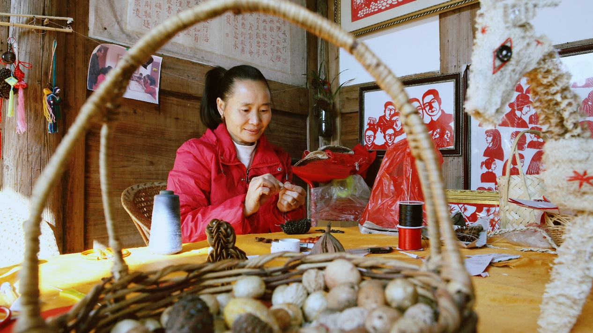
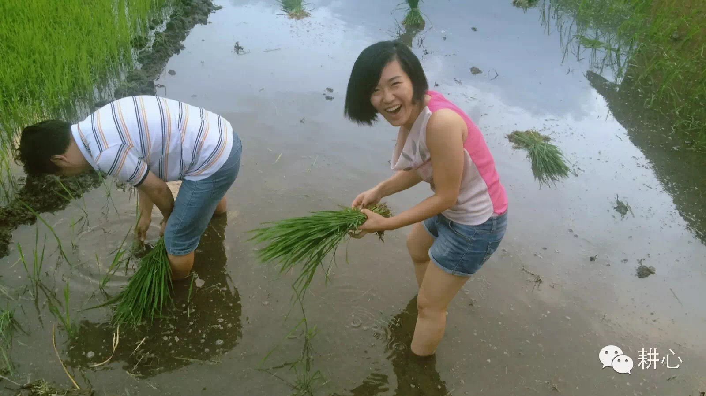
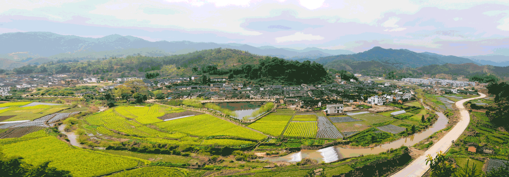
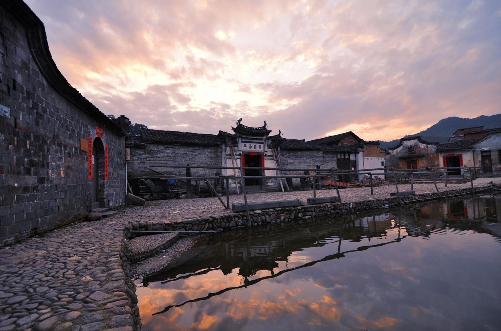
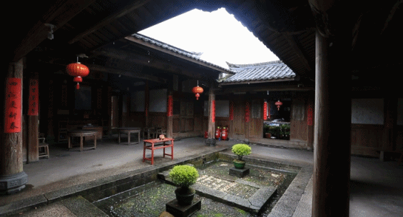
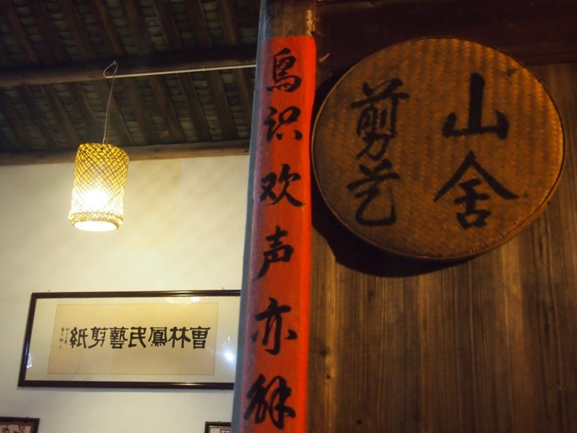
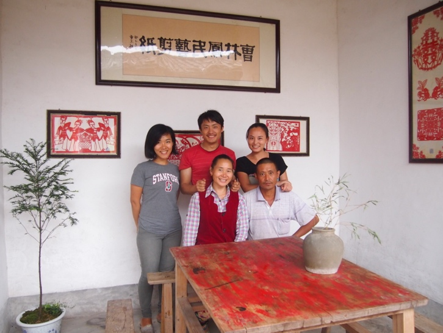
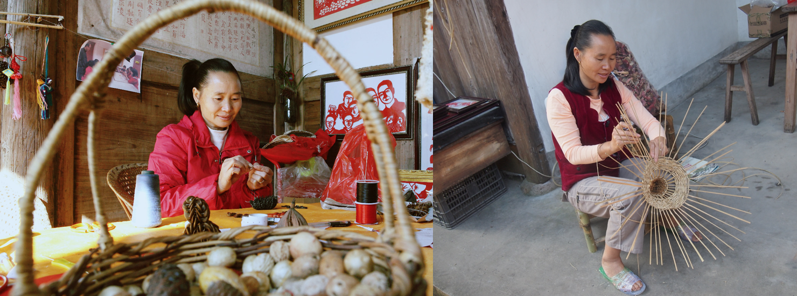
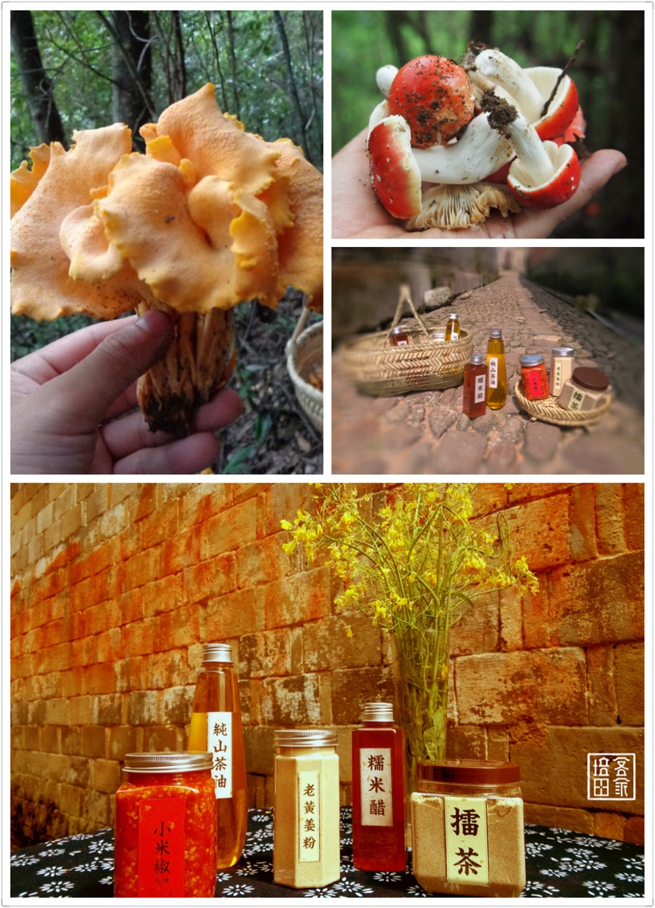
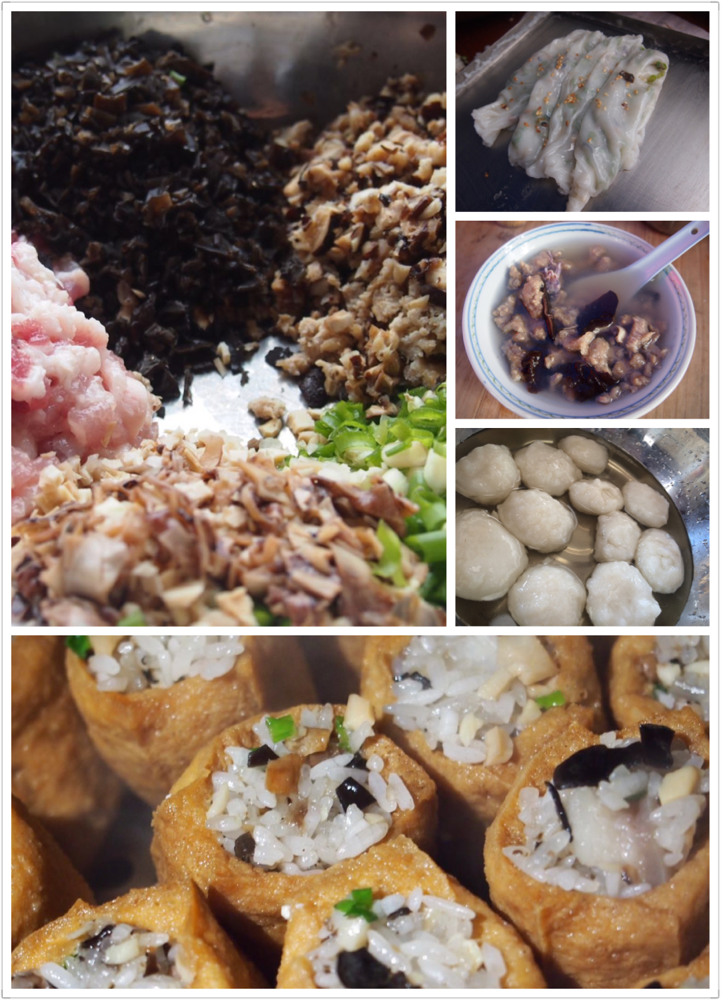

一张张彩纸
寥寥数剪
就可以剪成栩栩如生、活灵活现的小物
而每个生动的剪纸背后
都有一个神秘动人的故事
而这一切故事，从《剪艺山舍》开始
我是车明阳
《剪艺山舍》的发起人
我叫车明阳，前CareerFrog学员，毕业于香港大学，2010年获香港QP商业案例分析大赛冠军，12年获全球商业案例分析大赛冠军。xxx年xx月以全额奖学金受邀到斯坦福大学暑期学习，而后进入全球顶尖管理咨询公司——罗兰贝格咨询公司，后创立电子商务公司“美觉”，现于福建创建福建省耕心旅游发展有限公司，并于培田发展“原生态旅游”。
一年前的自己被各式各样的标签包裹成一个光鲜亮丽的精英，每日生活在咖啡、办公台、ppt、奢侈的五星级酒店、激增的飞机里程和周日喧嚣的party里，这样的生活让我觉得索然无味。本应该觉得安全幸福的我，在这样喧嚣的世界里却找不到自我，在东跑西颠的忙碌中像自由落体般坠落。2015年6月份，与福建培田古村偶遇，被他温暖淡然的气质所深深吸引。在二三百年的老房子里徜徉，听着吴氏大家族或是荣耀或叹息的过往。我想，这就是我要生活的地方。几乎没怎么多想，2015年8月份，我毅然决然辞去了光鲜亮丽的工作，收拾行囊，义无反顾的投入培田的怀抱，扎根培田，投入到民宿的建造中。
培田，这里是一座有800年历史的客家古村落
这里是福建民居第一村的民间故宫
这里是吴姓家族祖辈生活的故土
旧时王谢堂前燕，飞入寻常百姓家。
野花草
夕阳斜
黑瓦木墙青石巷
绿蔓纱窗
乌铜紧锁院深秋
竹篱花影亭榭格局迥异
石兽蹲在门街旁护守古朴

如此具有文化底蕴的美景，我想，也许是时候停下脚步，建一个属于自己的客家民宿。
在培田古村落这座民间故宫，开一家具有中国传统手工艺的《剪艺山舍》。《剪艺山舍》在一切改建的基础上，进行二期改建，包括民宿房间改造和厨房建设。
 
一期改造效果图
曹阿姨的剪纸和编织
我们和剪艺山舍的叔叔阿姨一起打造，在保留了剪艺山舍明净质朴外观原貌的基础上，对小舍内部做了彻底改造，建立了全新的闻见米香味的厨房。
当然，如果你想尝尝当地特色的客家美食我们一定会为你备好美味佳肴
地道的客家特产
地道的客家美食